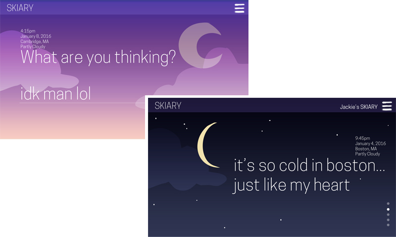
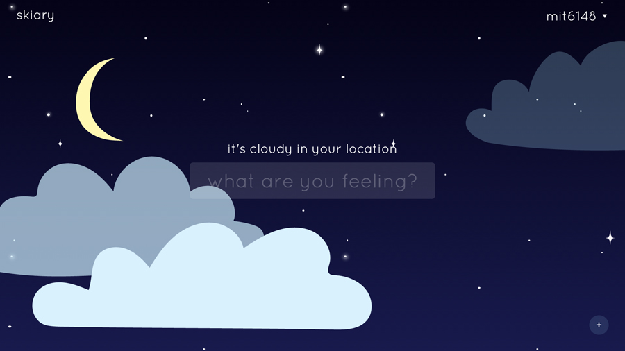
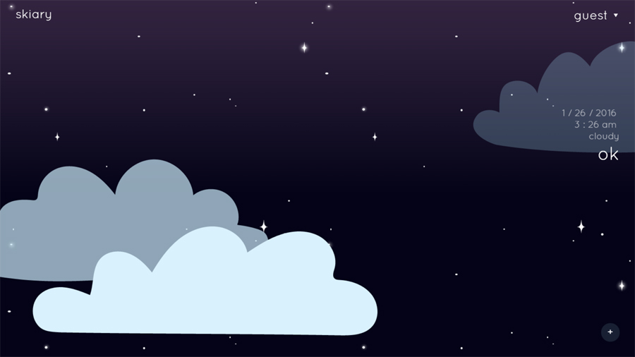
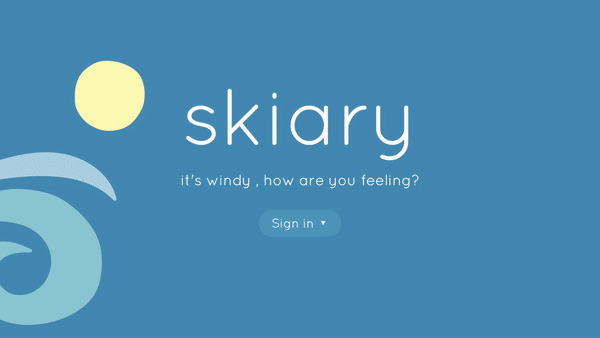

skiary
web application - january 2016

done for
6.148 web programming competition
tools used
Meteor, HTML, CSS
awards
Most Impressive UI + 3rd Place Rookie Division
skiary is a reimagining of the personal diary, providing a venue to combine snippets of our deep, personal, or random thoughts along with visualizations of the environments we write from.
Using geolocation services and a weather API, Skiary generates calming sky gradients and playful graphics into its UI, visualizing the importance of setting and the continuity of time as a backdrop for our most intimate musings.
concepts + mockup + planning
Watching the night sky, sunrise, or sunrise is often a very personal, introspective activity. I wanted to create an experience that melds the atmospheric, visual richness of the sky at key times/locations/contexts into the action of writing down thoughts/emotions in an digital diary. A key motivation for me was to create an application that was not only functional, but engaged with users in an emotional way through a playful user interface.

I wanted render a certain diary entry's backdrop with graphics/colors that represented the time and weather at the current location of writing. The user's diary would be greeted at a section that allows a short input of characters to quickly jot down feelings, each previous post scrollable from the new entry section.
As the page scrolls from one post to another, the background seamlessly changes color according to a gradient that transitions the sky color between those different points.
implementation
I worked in a team of three to create skiary, working closely on both front-end and back-end technologies in its creation, using Meteor as a framework. The greatest challenge was implementing the dynamically changing user-interface based on time and geolocation, writing scripts to generate CSS that styles the background of each diary entry.
 
I also created the homepage/login screen, which cycles through the various weather options with their graphics, and also animates the background between day and night.
Skiary is currently down (as our host, Meteor, no longer offers free web hosting). However, we are open to continuing development and making improvements in the future.